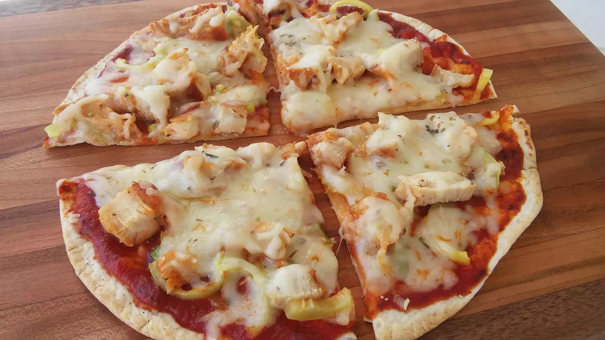

Tortilla Pizza

Description
This tortilla pizza is an absolute breeze to make. It's so light and delicious,
you can easily eat it as a snack, serve it as an appetizer, or even devour it
all by yourself! The possibilities are limitless when it comes to toppings, so feel
free to be creative.
You'll find a list of ingredients and step-by-step instructions in the recipe below:
Ingredients
- 1 (8 inch) soft flour tortilla
- 1 teaspoon olive oil
- 1 pinch garlic powder
- salt and ground black pepper to taste
- 3 tablespoons tomato sauce
- 1 cooked chicken breast, sliced
- ½ green bell pepper, chopped
- 2 green onions, finely chopped
- ⅓ cup shredded mozzarella cheese
- 1 pinch dried oregano
Steps
- Preheat the oven to 400 degrees F (200 degrees C).
- Place tortilla on a baking sheet. Brush with olive oil; sprinkle garlic powder, salt,
and pepper on top.
- Bake in the preheated oven until golden, 3 to 5 minutes. Remove from the oven
and spread tomato sauce on top; arrange chicken breast, green bell pepper, and
green onions over tomato sauce. Sprinkle with mozzarella cheese.
- Bake in the preheated oven until cheese is melted, about 5 minutes. Sprinkle
oregano over cheese. Slice pizza into wedges using a pizza cutter.